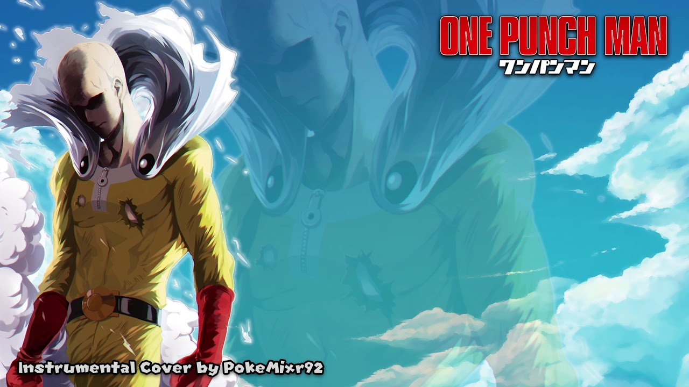

Top 5 Best Anime of All Time
Ranking the top 5 greatest anime ever. Based on over 100K votes from anime fans around the world.
1. Naruto: Shipuuden

Author: Masashi Kishimoto
A powerful fox known as the Nine-Tails attacks Konoha, the hidden leaf village in the Land of Fire, one of the Five Great Shinobi Countries in the Ninja World. In response, the leader of Konoha and the Fourth Hokage, Minato Namikaze (with his wife Kushina Uzumaki) seals the fox inside the body of his newborn son, Naruto Uzumaki, making Naruto a host of the beast;[e] this costs Naruto's father his life, and the Third Hokage returns from retirement to become the leader of Konoha again. Naruto is often ridiculed by the Konoha villagers for being the host of the Nine-Tails. Because of a decree made by the Third Hokage forbidding anyone to mention these events, Naruto knows nothing about the Nine-Tails until 12 years later, when Mizuki, a renegade ninja, reveals the truth to Naruto. Naruto then defeats Mizuki in combat, earning the respect of his teacher Iruka Umino.
Shortly afterward, Naruto becomes a ninja and joins with Sasuke Uchiha, against whom he often competes, and Sakura Haruno, on whom he has a crush, to form Team 7, under an experienced sensei, the elite ninja Kakashi Hatake. Like all the ninja teams from every village, Team 7 completes missions requested by the villagers, ranging from doing chores and being bodyguards to performing assassinations.
After several missions, including a major one in the Land of Waves, Kakashi allows Team 7 to take a ninja exam, enabling them to advance to a higher rank and take on more difficult missions, known as Chunin Exams. During the exams, Orochimaru, a wanted criminal, invades Konoha and kills the Third Hokage for revenge. Jiraiya, one of the three legendary ninjas, declines the title of Fifth Hokage and searches with Naruto for Tsunade whom he chooses to become Fifth Hokage instead.
During the search, it is revealed that Orochimaru wishes to train Sasuke because of his powerful genetic heritage, the Sharingan. [g] After Sasuke attempts and fails to kill his older brother Itachi[h] when he showed up in Konoha to kidnap Naruto, he joins Orochimaru, hoping to gain from him the strength needed to kill Itachi. The story takes a turn when Sasuke leaves the Konoha village and when Tsunade finds out, she sends a group of ninja, including Naruto, to retrieve Sasuke, but Naruto is unable to persuade or force him to come back. Naruto and Sakura do not give up on Sasuke: Naruto leaves Konoha to receive training from Jiraiya to prepare himself for the next time he encounters Sasuke, while Sakura becomes Tsunade's apprentice.
Best Episode:
Following the original Naruto series, Naruto Shippuden brought audiences tales of a ninja community on the brink of war. The anime spent a decade releasing new episodes. Teenagers with advanced fighting abilities were the saviors in the series based on Masashi Kishimoto’s manga. During that decade, more than 500 episodes of television were produced.
In the aptly titled “Naruto And Sasuke,” the duo’s final battle raged on. The highest rated episode of the series contains the bulk of their fight.
Every trick the two learned over the years since end up used here. Naruto even called back to his first major skill of shadow clones. Here, however, he made shadow clones of Kurama, not himself. The audience also got to see the symbolism of all those who helped the two shinobi become who they are as hands help form different attacks for them. For Sasuke, there’s Itachi. For Naruto, there’s nearly every teacher and classmate he’s had. It’s a stark contrast in support when Sasuke tries to needle Naruto about loneliness.
The episode ended with the two completely exhausted, leaving fans wondering just how this conflict would truly end.
Those 500 episodes received more than 67,000 user ratings on the Internet Movie Database. There, the series has an 8.5 rating out of a possible 10 stars. All of the top episodes of the series actually rank with at least nine stars.
Main Characters:
- Naruto
- Sasuke
- Sakura
- Kakashi
- Jiraiya
2. One Piece
Author: Eiichiro Oda
The series focuses on Monkey D. Luffy, a young man who, inspired by his childhood idol and powerful pirate "Red Haired" Shanks, sets off on a journey from the East Blue Sea to find the titular treasure and proclaim himself the King of the Pirates. In an effort to organize his own crew, the Straw Hat Pirates,[Jp 1] Luffy rescues and befriends a swordsman named Roronoa Zoro, and they head off in search of the One Piece. They are joined in their journey by Nami, a navigator and thief; Usopp, a sniper and a pathological liar; and Vinsmoke Sanji, a womanizing chef. They acquire a ship named the Going Merry[Jp 2] and engage in confrontations with notorious pirates of the East Blue. As Luffy and his crew set out on their adventures, others join the crew later in the series, including Tony Tony Chopper, a doctor and anthropomorphized reindeer; Nico Robin, an archaeologist and former assassin; Franky, a cyborg shipwright; Brook, a skeletal musician and swordsman; and Jimbei, a fish-man helmsman and former member of the Seven Warlords of the Sea. Once the Going Merry becomes damaged beyond repair, the Straw Hat Pirates acquire a new ship named the Thousand Sunny[Jp 3]. Together, they encounter other pirates, bounty hunters, criminal organizations, revolutionaries, secret agents and soldiers of the corrupt World Government, and various other friends and foes, as they sail the seas in pursuit of their dreams.
Main Characters:
- Monkey D. Luffy
- Roronoa Zoro
- Nami
- Sabo
- Nico Robin
3. Dragon Ball Z
Author: Akira Toriyama
Dragon Ball Z picks up five years after the end of the Dragon Ball anime, with Goku now a young adult and father to his son, Gohan. A humanoid alien named Raditz arrives on Earth in a spacecraft and tracks down Goku, revealing to him that he is his long-lost older brother and that they are members of a near-extinct alien warrior race called the Saiyans (サイヤ人, Saiya-jin). The Saiyans had sent Goku (originally named "Kakarot") to Earth as an infant to conquer the planet for them, but he suffered a traumatic brain injury soon after his arrival and lost all memory of his mission, as well as his bloodthirsty Saiyan nature. Raditz and two elites are the only remaining Saiyan warriors, so Raditz came to enlist Goku's help in conquering frontier worlds. When Goku refuses to join them, Raditz takes Goku down with one strike, kidnaps Gohan and threatens to kill him if Goku doesn't kill 100 humans. Goku decides to team up with his enemy Piccolo in order to defeat Raditz and save his son. During the battle, Gohan's rage momentarily makes him stronger than Piccolo and Goku as he attacks Raditz to protect his father. The battle ends with Goku sacrificing his life, restraining Raditz so that Piccolo could hit them with a deadly ki attack. Before Raditz dies, his scouter device allows his allies to hear about the wish-granting Dragon Balls with which Goku will be revived. Raditz tells Piccolo that the two Saiyans are much stronger than him and will come for the Dragon Balls in one year. Having witnessed Gohan's latent potential, Piccolo takes him to the wilderness to train for the battle with the Saiyans. Goku travels the million-kilometer Snake Way so that he can train under the ruler of the North Galaxy, King Kai. King Kai teaches him the Kaio-ken (界王拳) and Spirit Bomb (Genki Dama (元気玉)) techniques, and Piccolo grows fond of Gohan. After a year, Goku is revived with the Dragon Balls but King Kai panics as he realizes that Goku will have to take Snake Way again to get back and won't make it until hours after the Saiyans arrive. Goku's allies group up to fight until Goku gets back, but are outclasses by Nappa and the Saiyan prince, Vegeta. Yamcha, Tien Shinhan and Chiaotzu die in the battle, and Piccolo sacrifices himself to save his rival's son, thus causing Kami to die and the Dragon Balls to become inert. When Goku finally arrives at the battlefield, he avenges his fallen friends by defeating Nappa with his new level of power. Goku uses several grades of the Kaio-Ken to win the first clash with Vegeta which concludes with a climactic ki beam struggle, but it comes at a great cost to his body. Vegeta comes back and creates an artificial moon to transform into a Great Ape, allowing him to crush Goku. Krillin and Gohan sense that Goku is in trouble, and they return for a group fight with the weakened Vegeta. They are aided at key moments by Yajirobe, who cuts Vegeta's tail to revert him to his normal state. Goku gives Krillin a Spirit Bomb that he made, and Krillin uses it to severely damage Vegeta. Vegeta is ultimately defeated by Gohan's Great Ape form, and he retreats to his spaceship as Krillin approaches to finish him off. Goku pleads with Krillin and convinces him to spare Vegeta's life and allow him to escape Earth, with Vegeta vowing to return and destroy the planet out of revenge for his humiliation at Goku's hands.
Main Characters:
- Goku
- Vegeta
- Majin Buu
- Frieza
- Gohan
4. Hunter X Hunter

Author: Yoshihiro Togashi
In 1999, Hunter × Hunter was adapted into a 62-episode anime television series produced by Nippon Animation and directed by Kazuhiro Furuhashi. The show premiered on Japan's Fuji TV and ran until 2001. Three separate original video animations (OVAs) totaling 30 episodes were subsequently produced by Nippon Animation and released in Japan from 2002 to 2004. A second anime television series by Madhouse aired on Nippon Television from October 2011 to September 2014 totaling 148 episodes, with two animated theatrical films released in 2013. There are also numerous audio albums, video games, musicals, and other media based on Hunter × Hunter.
The manga has been translated into English and released in North America by Viz Media since April 2005. Both television series have been also licensed by Viz Media, with the first series having aired on the Funimation Channel in 2009 and the second series broadcast on Adult Swim's Toonami block from April 2016 to June 2019.
Main Characters:
- Killua Zoldyck
- Gon Freecss
- Hisoka
- Kurapika
- Ging Freecss
5. One-Punch Man
Author: ONE
On a supercontinent Earth, powerful monsters and villains have been wreaking havoc in the cities. In response, the millionaire Agoni creates the Hero Association, which employs superheroes to fight evil. Saitama, an unassociated hero, hails from City Z and performs heroic deeds for his own enjoyment. He has trained himself to the point of being able to defeat any enemy with a single punch, but his unmatched strength has left him with an overwhelming sense of boredom.
Saitama eventually becomes a reluctant mentor to Genos, a cyborg seeking revenge against another cyborg who killed his family and destroyed his hometown. Saitama and Genos join the Hero Association, but due to scoring low on the written entry exam, Saitama is placed at a low-entry rank, and his feats remain unnoticed and unappreciated by the public.
The Hero Association calls all the top heroes to a meeting, informing them that the seer Shibabawa had a vision that the world is in danger. Immediately after the meeting, an alien named Boros invades the planet. The heroes fight the invaders outside Boros's ship, while Saitama boards the ship and fights Boros.
Saitama meets other heroes, such as the martial artist Bang, the esper Blizzard, and King, a hero considered the strongest man on Earth. Monsters also begin to appear at a rising rate. Another growing threat is the rogue martial artist Garo, Bang's former apprentice and self-dubbed "Hero Hunter", who fights and defeats heroes to grow stronger.
monster influx is revealed to be the doing of the Monster Association, an organization composed of monsters intent on destroying the Hero Association. They attack various cities, kidnap a Hero Association executive's child, and recruit fighters by offering them "monster cells", which cause humans to mutate into monsters with extraordinary abilities. Throughout all this, Garo bonds with a child who idolizes heroes, seeks out heroes to battle, and greatly improves his fighting abilities. The Monster Association attempts to recruit him, and kidnaps the child when Garo refuses.
enters the Monster Association headquarters in City Z to rescue the child, but is captured. The Hero Association also breaches the headquarters to rescue the executives' child and a chaotic battle ensues, in which City Z is destroyed. The majority of the Monster Association's leaders are slain, but many of the heroes, having grown overconfident in their abilities, are defeated. Garo, having achieved tremendous power, defeats the remaining heroes, before Saitama in turn arrives and defeats him. Despite the objections of the other heroes, Saitama spares Garo's life and lets him flee for parts unknown.
the aftermath of the battle, the Hero Association's poor performance leads to public opinion of them plummeting. Several heroes and officials decide to retire or defect to the Neo Heroes, a burgeoning rival group that appears to be more effective in handling the growing monster threats with its larger membership and the leadership of the hero Blue, who claims to be the son of the long-missing Blast.
Main Characters:
- Saitama
- Tornado of Terror
- Genos
- Child Emperor
- Atomic Samurai